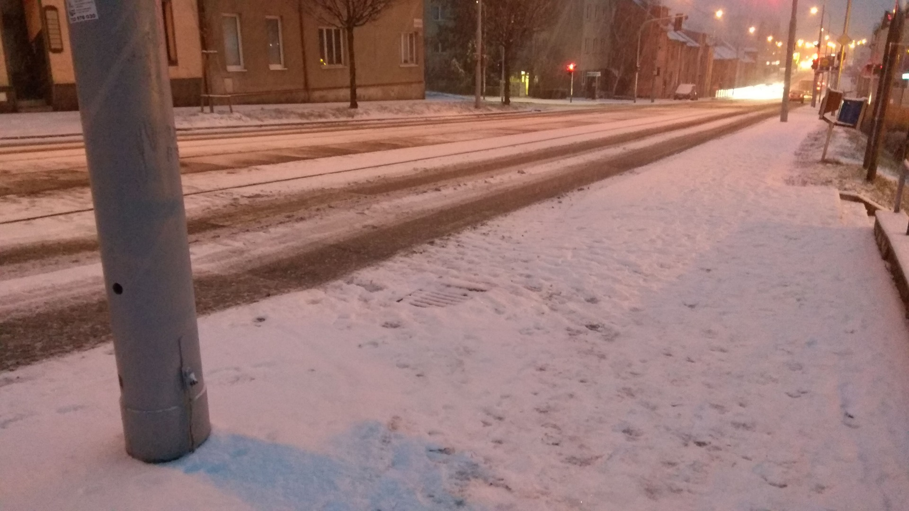
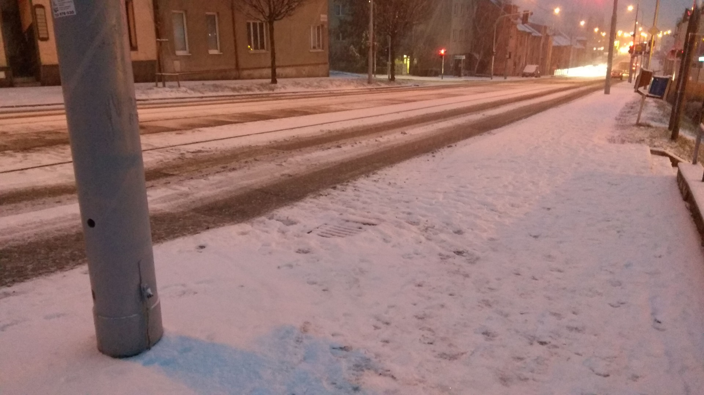

V rodině asi tak od roku 2014 nepoužíváme klasický digitální fotoaparát, ale fotíme mobilem, protože už i v té době byly srovnatelné se starým fotoaparátem.
Na Instagramu jsem od roku 2019 - 2021 fotil mobilem Xiaomi Redmi Note 4. Od roku 2021 - 2023 fotím Samsungem Galaxy A51 a od 2. půlky roku 2023 fotím Samsungem Galaxy S21 FE.
 

Výše můžete vidět fotku, kterou jsem pořídil ráno u nádraží v Krpoli. Východ udělal krásnou rudou atmosféru.
Výše můžete vidět 2 méně ostré makro fotografie včely pořízeny trojnásobným teleobjektivem.
Selfie s kozlem